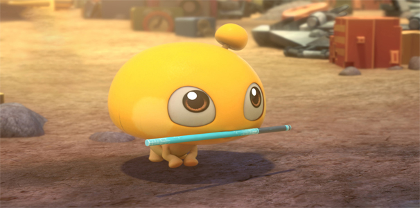
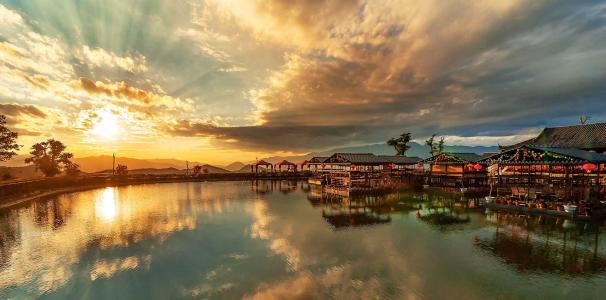

-
视频无法正常播放，请点击右上角下载按钮播放视频

-
济南市，简称“济”，别称“泉城”，是山东省省会、 [1] 全国十五个副省级城市之一，环渤海地区南翼的中心城市，山东省的政治、文化、教育、经济、交通和科技中心。 [2] 中国人民解放军北部战区陆军机关驻地 [3] ，山东半岛城市群和济南都市圈核心城市、新一线城市。 济南因境内泉水众多，拥有“七十二名泉”，被称为“泉城”，素有“四面荷花三面柳，一城山色半城湖”的美誉，济南八景闻名于世，是拥有“山、泉、湖、河、城”独特风貌的旅游城市，是国家历史文化名城、首批中国优秀旅游城市，史前文化——龙山文化的发祥地之一。 济南北连首都经济圈，南接长三角经济圈，东西连通山东半岛与华中地区，是环渤海经济区和京沪经济轴上的重要交汇点，环渤海地区和黄河中下游地区中心城市之一。济南已成功举办亚洲杯、全运会、中国国际园林花卉博览会、中国艺术节等多项国际和国家级盛会，2015年第22届国际历史科学大会也在济南成功举办，标志着这项世界盛会创办一个多世纪后首次走进亚洲。2016年中国绿公司年会 [4] 、2017年第五届世界摄影大会在济南开幕 [5] 。 2016年12月7日，济南市被国务院列为第三批国家新型城镇化综合试点地区 [6] 。2017年中国百强城市排行榜排19位。 [7-8] 2018年1月，国务院正式批复《山东新旧动能转换综合试验区建设总体方案》，支持济南建设国家新旧动能转换先行区。 [9-10]
